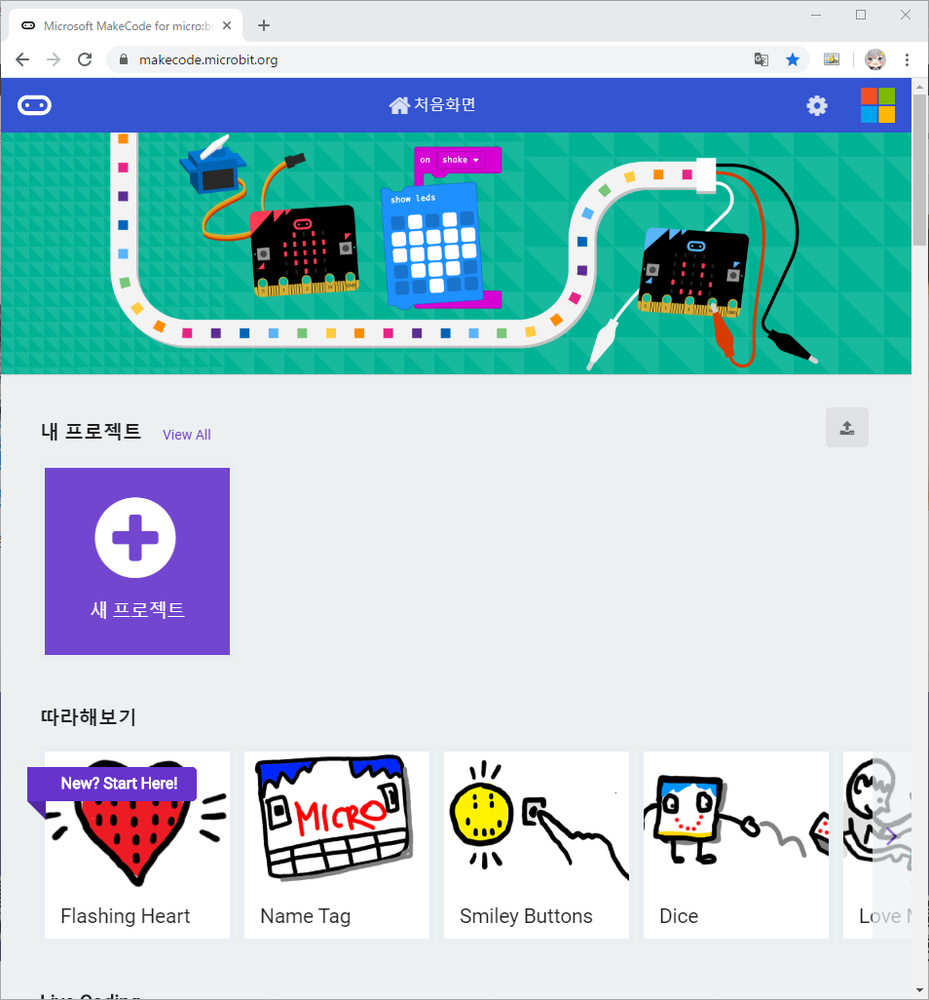
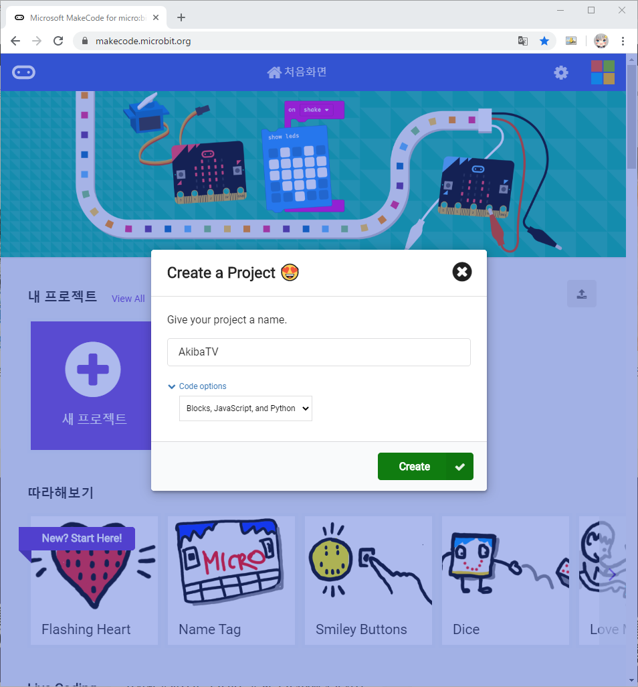
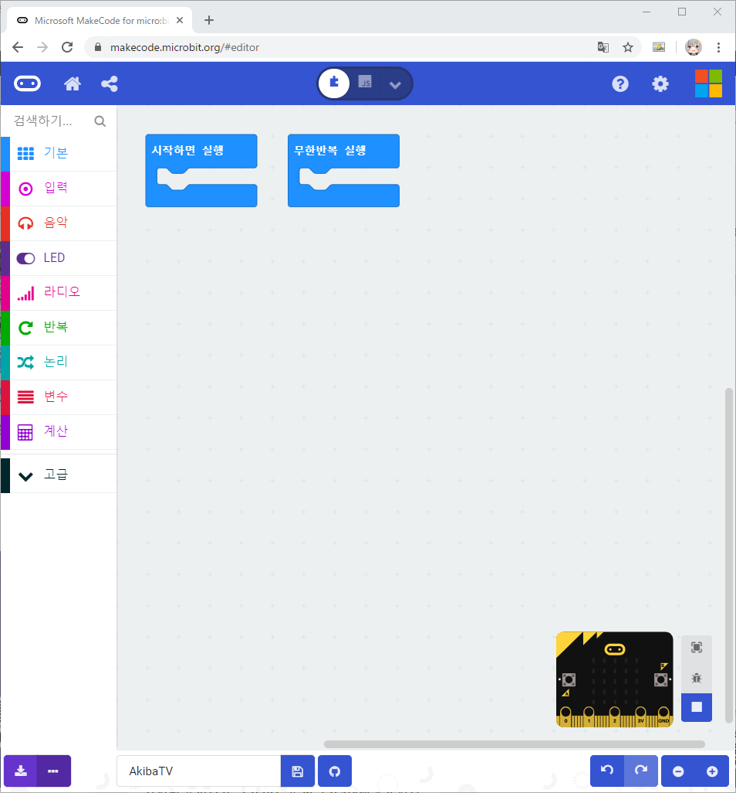
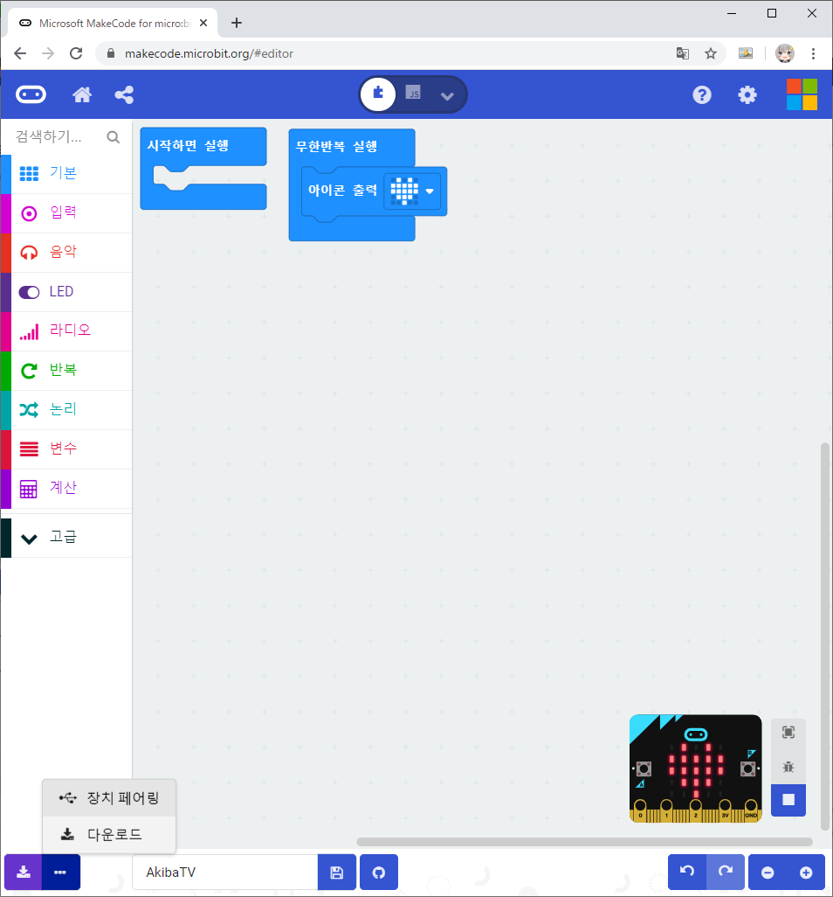
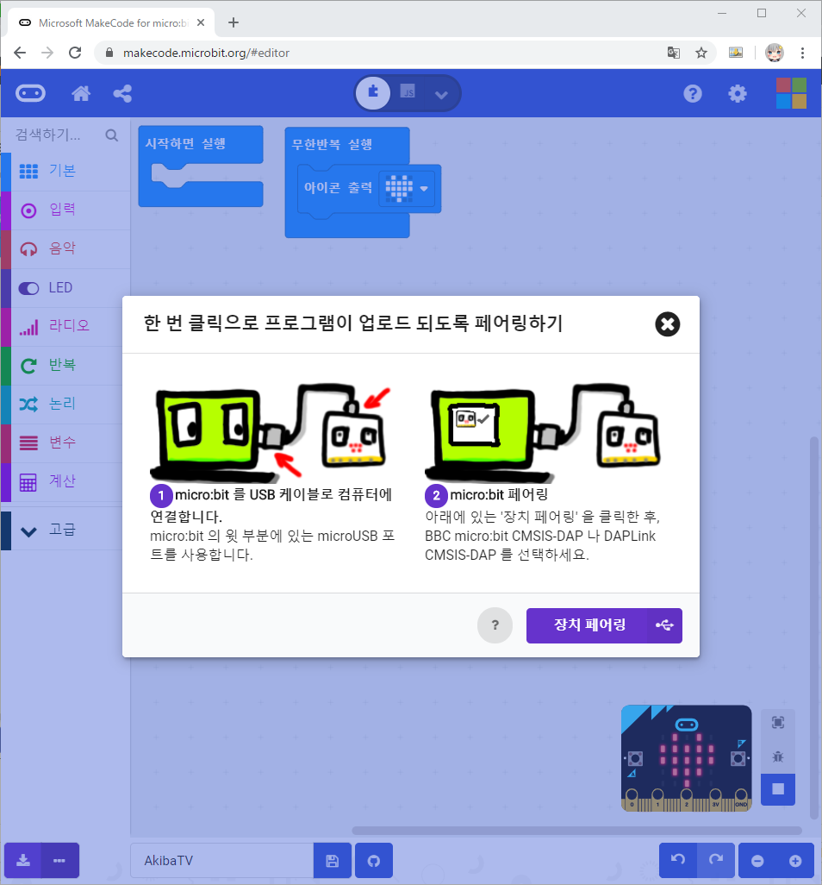
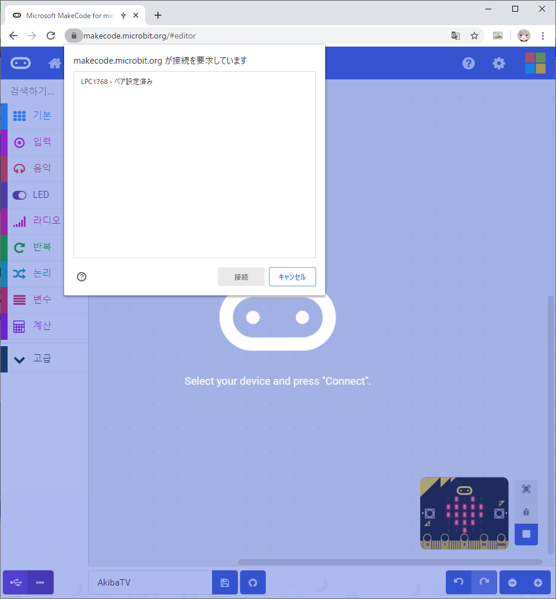
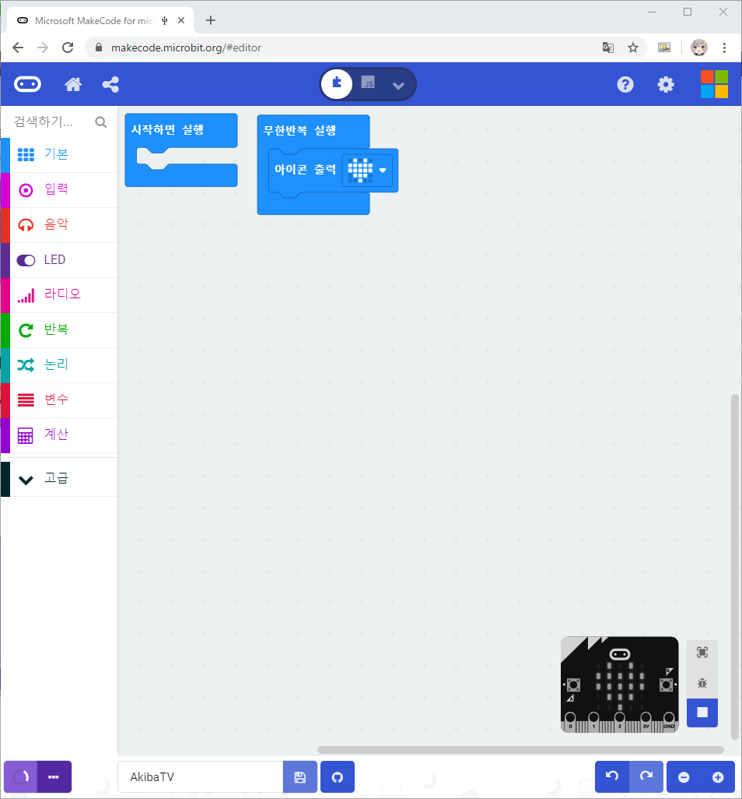
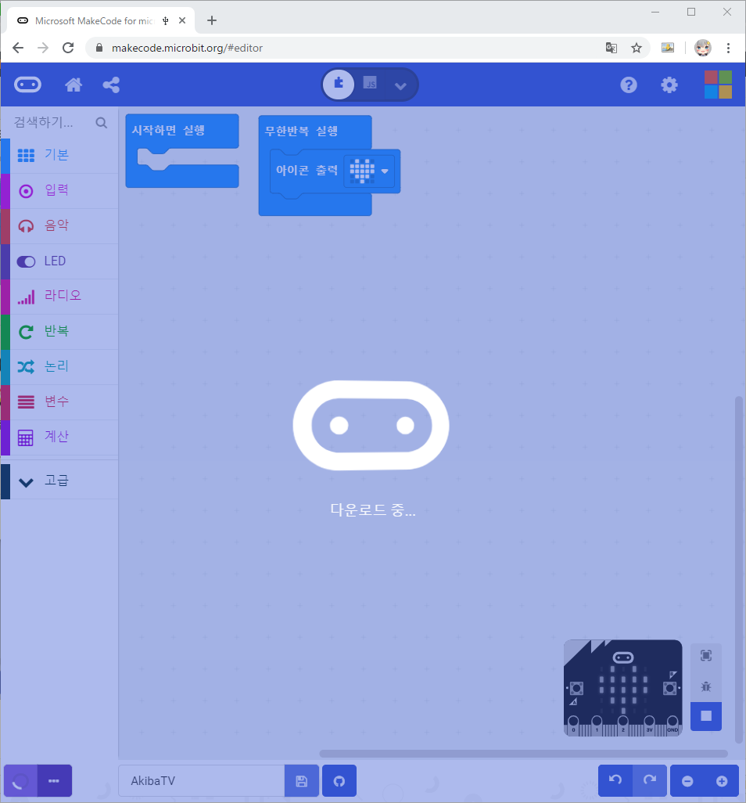
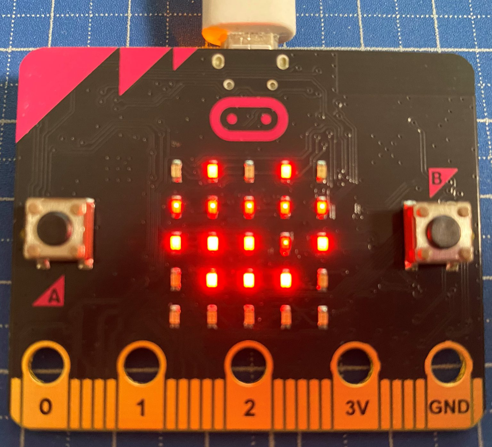

micro:bit 마이크로비트 처음 사용자 코딩방법 소개
micro:bit 마이크로비트 처음 사용자 코딩방법 소개
안녕하세요. AkibaTV 입니다.
이번에 소개할 내용은 micro:bit 마이크로비트 처음 사용자 코딩방법 입니다.
처음 마이크로 비트를 구매하시고 어떻게 코딩해서 어떻게 동작시키는지
기본 방법을 같이 해보도록 하겠습니다.
마이크로비트 코딩을 위해서 마이크로소프트가 제공하는 개발툴을 이용해 보도록 하겠습니다.
아래의 사이트로 접속하시면 바로 프로젝트 생성과 개발이 가능 합니다.
https://makecode.microbit.org/

사이트에 접속을 하시면 위와같이 내 프로젝트를 생성하는 버튼과
따라만 해도 구현이 가능한 예제들과 영상들이 있습니다.
우선 새 프로젝트를 생성 해보도록 하겠습니다.
새 프로젝트 버튼을 눌러주세요.

위와같이 나오시면 생성하실 프로젝트명을 입력하시고
옵션은 기본으로 하시고 만들기 버튼을 눌러주시기 바랍니다.

프로젝트를 만드시면 위와같이 새 프로젝트가 생성이 되었습니다.
왼쪽메뉴에서 만들고싶은 메뉴를 선택후 실행화면에 끌어다 놓으시면
하단의 마이크로비트 화면으로 동작화면을 테스트를 해보실수가 있게 됩니다.
간단한 작업에 대해서는 끌어다 놓고 실행만으로 코딩이 끝나게 됩니다.
간단한 작업에 대해서는 끌어다 놓고 실행만으로 코딩이 끝나게 됩니다.

그럼 왼쪽 하단의 …버튼을 누르시고 장치 페어링을 클릭해 주세요.

그럼 위와같이 장치 연결방법에 대한 설명이 나오며 장치페어링 버튼을 눌러주세요.

그럼 장치를 연결할 장치 목록이 나오며 장치를 선택하시면 장치가 연결이 완료가 됩니다.

장치 연결까지 되셨으면 이제 작업한 결과물을 장치에서 직접 확인을 해야하니 왼쪽하단의 … 옆 버튼을 눌러주시면
현재 만들어진 프로젝트가 다운로드를 시작하면서 장치에 업로드를 하게 됩니다.

다운로드가 완료가 되면 장치에 프로그램이 입력이 되며 자동으로 마이크로 비트에서 실행이 됩니다.

위와같이 나오시면 성공적으로 되었습니다.
다음에는 좀더 다양한 주제의 마이크로비트 프로젝트를 해보도록 하겠습니다.